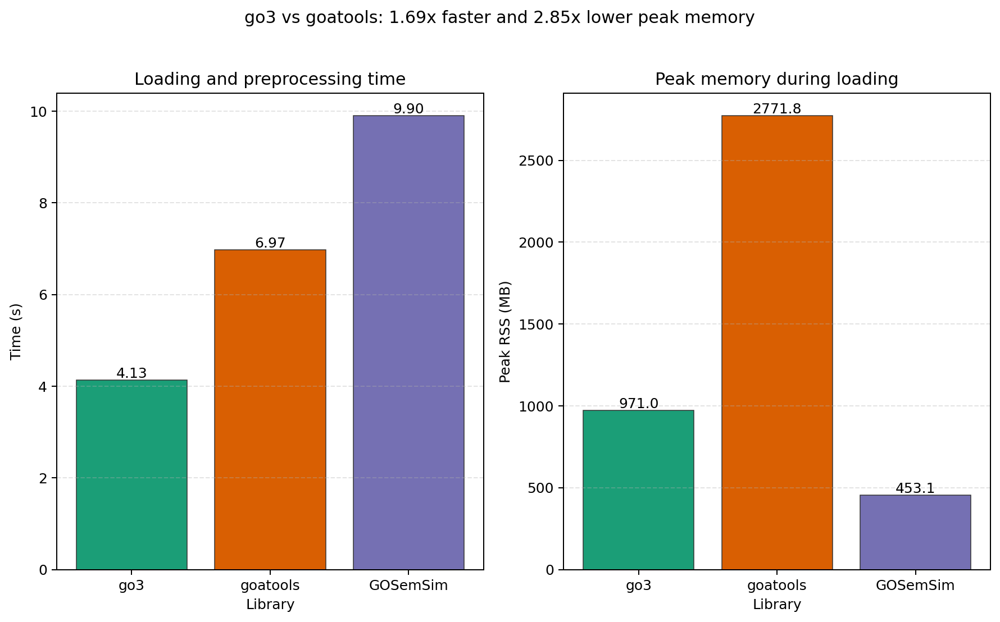
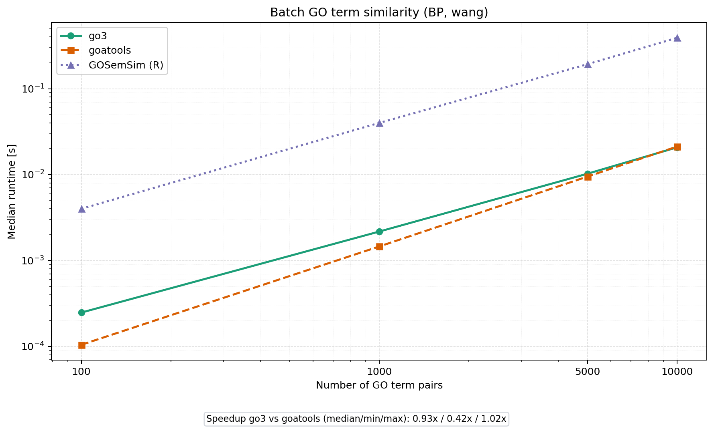
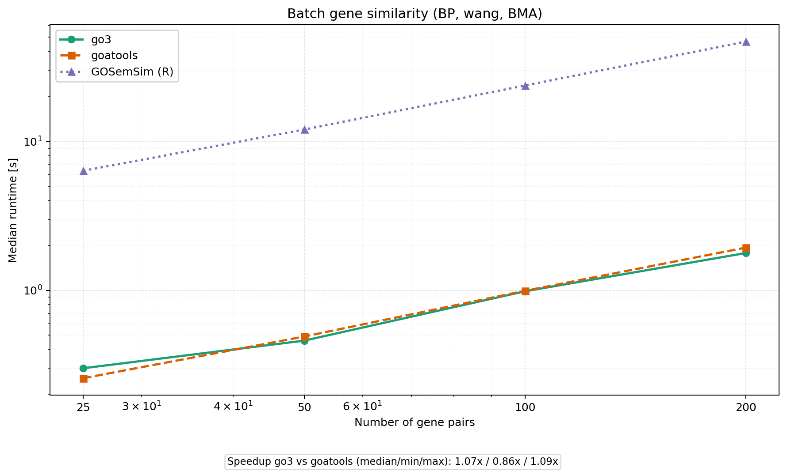
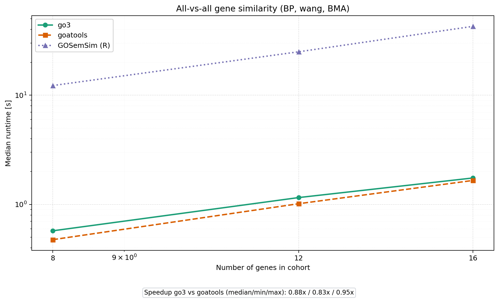

Benchmarks¶
GO3 is a Rust-native backend with Python bindings. Benchmarking should therefore distinguish between:
end-to-end preprocessing cost (ontology + annotations + IC)
high-throughput semantic similarity workloads
The benchmark suite in this repository is implemented in:
scripts/benchmark_go3vsgoatools.py
Scope and goals¶
The benchmark is designed to answer practical questions for bioinformatics pipelines:
How expensive is initialization (
load_go_terms,load_gaf,build_term_counter)?How does throughput scale for batch term similarity?
How does throughput scale for batch gene similarity (BMA)?
What happens in matrix-like workloads (all-vs-all gene similarity)?
Compared libraries¶
go3: this package (Rust core, Python API)goatools: Python-only baseline in the same runtime ecosystemGOSemSim(optional): informative reference only
GOSemSim is optional because it runs in R and can differ in ontology/annotation handling details, which limits strict apples-to-apples comparisons.
Methodology summary¶
Loading benchmark¶
Measured in isolated subprocesses per library to avoid cache carry-over:
load ontology
load annotations
build term statistics / IC structures
Reported metrics:
total wall-clock time
peak resident memory (RSS)
Pair benchmarks (terms and genes)¶
For each input size n:
same sampled pair set is used by all libraries
warmup runs are excluded from timing
median over repeated timed runs is reported
throughput (
pairs/second) is computedspeedup (
goatools_time / go3_time) is computed
The benchmark supports independent size grids for term and gene workloads:
--term-pair-sizes--gene-pair-sizes
--pair-sizes remains available as a legacy shortcut to set both to the same values.
All-vs-all gene benchmark¶
For each cohort size g:
build all unique gene pairs:
g*(g-1)/2compare
go3.compare_gene_pairs_batchvs a goatools-based BMA implementationreport median time, throughput, and speedup
This benchmark emphasizes realistic quadratic workloads often seen in clustering, network construction, or cohort-level exploratory analyses.
Reproducible commands¶
Run from an environment where go3 and goatools are installed (for example ./venv/bin/python in this repo).
Full benchmark (recommended)¶
./venv/bin/python scripts/benchmark_go3vsgoatools.py \
--namespace BP \
--term-method lin \
--gene-method lin \
--term-pair-sizes 1000,5000,20000 \
--gene-pair-sizes 25,50,100 \
--matrix-gene-sizes 8,12 \
--warmup 1 \
--repeats 2 \
--threads 8 \
--outdir imgs
Paper-ready profile (recommended for manuscript figures)¶
./venv/bin/python scripts/benchmark_go3vsgoatools.py \
--paper-ready \
--namespace BP \
--term-method lin \
--gene-method lin \
--outdir imgs
--paper-ready enables:
publication-oriented size profile
more robust timing repeats/warmup
high-resolution figures (
.png) and vector copies (.svg)extra environment metadata in
benchmark_results.json
Include GOSemSim (optional)¶
./venv/bin/python scripts/benchmark_go3vsgoatools.py \
--include-gosemsim \
--gosemsim-measure wang \
--r-libs-user ./.r_libs \
--outdir imgs
Output artifacts¶
The script writes:
imgs/benchmark_loading_time_memory.pngimgs/benchmark_batch_similarity.pngimgs/benchmark_gene_batch_similarity.pngimgs/benchmark_all_vs_all_gene_similarity.pngimgs/benchmark_results.json
The JSON contains raw runs, medians, throughput, and speedup summaries for downstream analysis or figure regeneration.
When using --paper-ready, each benchmark figure is also exported as .svg.
Current repository figures¶
The repository usually includes the latest generated figures:




Reading the plots¶
Single panel: absolute runtime curves (log-scale where appropriate)
A speedup summary text box is included inside the plot
Speedup > 1.0 means
go3is faster
For very small n, Python overhead can dominate and reduce visible speedup. The practical signal is in medium/large batches and all-vs-all scenarios.
Fairness notes¶
Benchmarks use the same ontology and GAF inputs for all compared methods.
Gene-level goatools comparisons rely on an explicit BMA implementation, because goatools does not provide equivalent high-level gene batch APIs.
Candidate selection favors biologically informative terms/genes (non-trivial IC/depth and sufficiently annotated genes), which better reflects real downstream analyses.